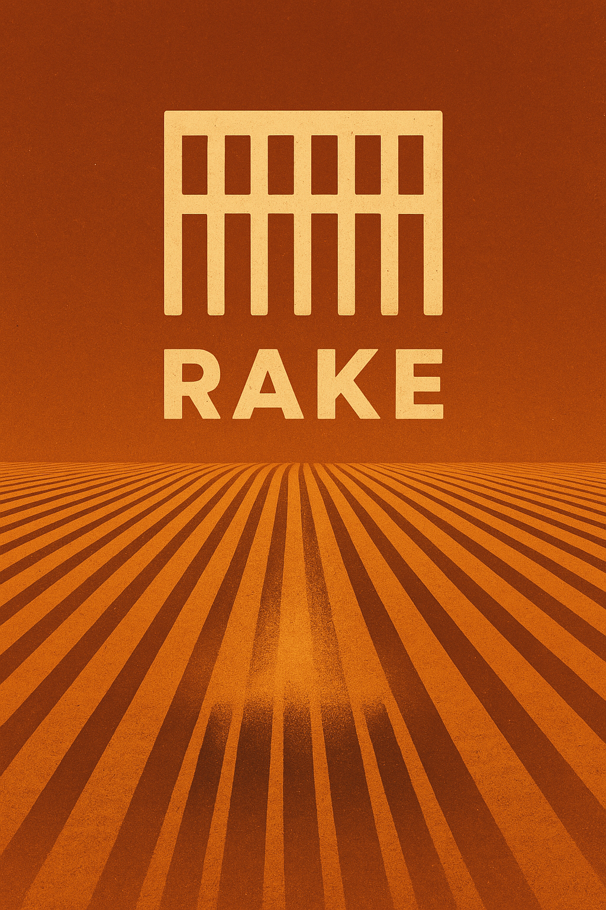

Write target-sized SIMD once. Get the promised machine shape—or a compiler error.
Rake makes machine-level vector properties part of compilation success. An accepted native program keeps each live rack in one physical SIMD register. Supported fused regions stay packed, call-free, and spill-free. If the selected target cannot preserve those properties, the compiler rejects the source and identifies the failed obligation.
Rust made a compelling modern case for a strict compiler: rejecting plausible programs can be more useful than accepting them when the diagnostic explains which safety rule the program violated and how to repair it. Rake applies that bargain to declared performance properties. A compute kernel is often written because its machine shape matters, so losing vectorization is a failed requirement rather than an incidental missed optimization.
Rake does not turn every performance surprise into a language error. The programmer opts into a named native profile with specific obligations. If an irregular access requires a forbidden gather, an operation requires scalar helper calls, or register pressure would spill a live rack, the compiler identifies the source operation and the failed obligation before the object ships. The programmer can change the algorithm, choose a profile that permits the cost, or make the slower path explicit.
Rust's ownership diagnostics →
The caller supplies two contiguous float columns and a runtime count.
The stack declares the columnar schema; the pack connects that
schema to storage. The source never names an intrinsic width.
stack Particles {
position_x: float rack,
velocity_x: float rack
}
run advance_x (particles : Particles pack) (<count> : int64)
(<dt> : float) -> result:
over particles, <count> |> particle:
particle.position_x + particle.velocity_x * <dt>
Compiling the same source for a named profile chooses the rack width. Four hundred
float values divide exactly, so no tail is needed:
| Target profile | Float lanes per rack | 400-particle traversal |
|---|---|---|
| SSE2 / NEON | 4 | 100 racks |
| AVX2 | 8 | 50 racks |
| AVX-512 | 16 | 25 racks |
The programmer does not maintain three intrinsic kernels, three loop strides, and three tail paths. Rake compiles separately for each selected target; this is static target specialization rather than runtime dispatch.
Consider a rack-wide sine operation when the backend has no compliant packed sine sequence. Ordinary C and Rust compilation can accept the source and emit scalar library calls. Rake refuses to describe that result as native rack execution.
The program compiles. Under the strict comparison build, the resulting loop contains scalar sinf calls. A different toolchain or flag set may make a different choice.
The frontend understands sin(values), but native emission stops before assembly.
call to 'sin' is not supported by native crunch lowering
| Approach | What remains the programmer's responsibility |
|---|---|
| C / Rust scalar loop | Confirm that autovectorization happened, used the intended width, avoided helper calls, and did not regress after a source or compiler change. |
| SIMD crates | Portable vector types can remove some target-specific syntax, but they do not ordinarily make Rake's combined one-register, no-spill, no-call, and no-scalarization contract a condition of compilation. |
| C / Rust intrinsics | Maintain target-width implementations and dispatch. Intrinsics request vector operations, while the compiler still owns register allocation and may spill intermediate vectors. |
| Rake native profile | Select the target profile. The compiler either proves the advertised machine properties or rejects the program. |
run/pack
traversal and the SSE2 and AVX-512 backends are still under construction, so the complete
400-particle example is currently frontend-checked rather than an end-to-end native claim.
Rake can carry its fail-closed philosophy into GPU compute, but the CPU promise cannot be copied word for word. A CPU rack is one value held in one SIMD register. A GPU rack would be one logical subgroup distributed across many shader invocations, with one lane of data owned by each invocation.
A SPIR-V vector is normally a small two-, three-, or four-component value inside one shader invocation. A Vulkan subgroup is a set of invocations that can exchange data and execute collective operations efficiently. Hardware commonly executes those invocations together as a wave or warp, although Vulkan defines subgroup behavior rather than a vendor instruction format.
A Rake GPU profile should map one logical rack lane to one subgroup invocation. Rack
addition then becomes one scalar addition in every invocation. A rack reduction becomes
a SPIR-V subgroup reduction. A shuffle becomes a subgroup shuffle. Tines become explicit
per-invocation predicates. Treating a 32-lane rack as OpTypeVector 32 would
describe the wrong execution model.
| Property | CPU rack | GPU rack |
|---|---|---|
| Physical interpretation | One native SIMD register | One logical subgroup spread across shader invocations |
| Lane storage | One component of the register | One scalar value owned by each invocation |
| Width selection | Element type and CPU profile | Required subgroup size in the Vulkan pipeline profile |
| Portable evidence | Allocated machine IR and object disassembly | Validated SPIR-V, declared capabilities, and pipeline requirements |
| Final register allocation | Owned by Rake | Owned by the Vulkan driver |
The particle source still describes 400 logical lanes of SoA work. A
vulkan-subgroup32 profile divides that work into twelve complete subgroups
and one subgroup with sixteen active invocations. A vulkan-subgroup64 profile
uses six complete subgroups and one with sixteen active invocations. Vulkan dispatch is
rounded to the configured workgroup size, and Rake's generated bounds predicate prevents
padded invocations from touching memory or performing unsafe partial operations.
| Selected profile | Logical rack width | 400-particle decomposition |
|---|---|---|
| x86-avx2 | 8 values | 50 complete racks |
| vulkan-subgroup32 | 32 invocations | 12 complete + 16 active |
| vulkan-subgroup64 | 64 invocations | 6 complete + 16 active |
A named Vulkan profile would include a SPIR-V version, required Vulkan features, subgroup width, floating-point modes, memory model, and permitted operation set. Pipeline creation would check the physical device and reject a profile whose required subgroup size or capabilities are unavailable.
Vulkan drivers compile SPIR-V into device-specific executables during pipeline creation. The driver may change instruction selection, schedule operations, allocate registers, or spill values. Consequently a portable Rake SPIR-V profile cannot promise any of the following properties solely from the emitted module:
Rake could recover a stronger guarantee for a named physical device and driver. A certification tool would create the Vulkan pipeline, capture executable statistics and any exposed internal representation, and apply a vendor-specific checker for spills, register use, helper code, and prohibited instructions. The certificate would bind the SPIR-V hash, pipeline state, device identity, driver version, subgroup size, and checker version.
Vulkan exposes pipeline executable statistics and internal representations through an optional developer-tools extension. Those representations are implementation-dependent and may include final shader assembly. A missing extension or unavailable assembly would make certification fail rather than weaken the claim. The resulting certificate would prove properties for one device and driver combination; it would not extend to every device that accepts the SPIR-V module.
GLSL, HLSL, ISPC, and other shader compilers can emit excellent SPIR-V, including the subgroup operations described above. Rake's prospective advantage is the compilation contract around those operations: the same lane semantics used for CPU racks, explicit SoA traversal and predication, named reproducible GPU profiles, and rejection whenever the emitted SPIR-V cannot preserve the selected profile.
Rake's combined contract would let one kernel express CPU SIMD and GPU subgroup execution without relying on CPU autovectorization or accepting silent GPU emulation. The advantage comes from validation and refusal. SPIR-V already has the necessary expressive capability.
SPIR-V specification → Vulkan subgroup model → Pipeline executable inspection →
Intel ISPC and Rake belong to the same useful language family. Both let programmers write one program for a compile-time group of lanes and retarget that program across hardware widths. ISPC presents the model through a mature, imperative C-family SPMD language. Rake explores an expression-oriented, dataflow-heavy syntax with a stricter compile-or- reject machine contract. More than one good design for this problem is an advantage for systems programmers.
ISPC is neither abandoned nor a mainstream application language. It is a successful specialist compiler used for performance-critical kernels beside larger C and C++ systems. OSPRay's CPU renderer is based on ISPC and uses SSE4, AVX, AVX2, AVX-512, and Arm NEON. Embree supports ISPC for parallel renderer code, and CMake has recognized ISPC as a compilation language since version 3.19.
That placement explains the small public profile. An application developer encounters
OSPRay or Embree while the .ispc files remain an implementation detail.
Rendering and scientific visualization also produce less general-language discussion
than CUDA, shader languages, C++ intrinsics, or Rust SIMD libraries. Intel's name can
suggest a narrower hardware target than ISPC's CPU support, which includes x86 and Arm.
OSPRay CPU implementation → Embree ISPC support → CMake ISPC language support →
export void advance_x(
uniform float position_x[],
uniform float velocity_x[],
uniform float output_x[],
uniform int count,
uniform float dt) {
foreach (i = 0 ... count)
output_x[i] = position_x[i]
+ velocity_x[i] * dt;
}stack Particles {
position_x: float rack,
velocity_x: float rack
}
run advance_x
(particles : Particles pack)
(<count> : int64) (<dt> : float)
-> result:
over particles, <count> |> particle:
particle.position_x
+ particle.velocity_x * <dt>
ISPC keeps the familiar loop, index, assignment, pointer, and C interoperability model.
Values inside the gang are varying unless marked uniform. Rake moves the
traversal and columnar schema into over, pack, and
stack, while angle brackets mark scalar values. Rake's core vector forms
favor pure expressions and SSA-like bindings, although Rake is not defined as a purely
functional language.
| Design choice | ISPC | Rake |
|---|---|---|
| Syntax and mental model | Imperative C-family SPMD with loops, assignments, pointers, functions, and familiar control flow. | Expression-oriented vector dataflow with explicit scalar markers, fused bindings, tines, through blocks, and total sweeps. |
| Parallel unit | A gang of program instances. The selected gang may be wider than one native CPU vector. | A CPU rack is exactly one native vector register; a proposed GPU rack is exactly one logical subgroup. |
| SoA model | soa<n> creates an explicitly n-wide SoA representation and supports layout conversion. | stack declares columns; pack supplies runtime storage and count; the target profile selects the traversal width. |
| Divergence vocabulary | Ordinary if, loops, and function calls acquire uniform or varying behavior from their operands. | Named tines expose masks; safe through blocks produce candidates; a total sweep selects each lane's result. |
| CPU machine contract | ISPC preserves gang semantics while LLVM owns instruction selection and register allocation. | Rake additionally rejects splitting, scalar lane loops, rack spills, and helper calls wherever the selected profile forbids them. |
| Backend strategy | LLVM-based native CPU compilation plus documented Intel Xe SPIR-V and native-binary targets. | Rake-owned CPU instruction selection and allocation; a proposed cross-vendor Vulkan SPIR-V backend with a separate driver trust boundary. |
| Maturity | Established production compiler, broad language, C/C++ interoperability, tasking, libraries, tools, and deployed CPU/GPU targets. | Experimental alpha with verified AVX2 and NEON register-level slices; pack traversal, broader CPU profiles, and SPIR-V remain unfinished. |
ISPC language and target guide → ISPC for Intel Xe →
Surprisingly few languages occupy ISPC's exact niche. Several neighboring systems solve parts of the same problem at a different level of abstraction or with a different machine contract.
| Language family | What it provides | How its contract differs |
|---|---|---|
| Halide | A functional, C++-embedded language for image and stencil pipelines with separate algorithm and scheduling choices across CPUs and GPUs. | Vector widths, tiling, placement, and other scheduling decisions are supplied by a programmer or autoscheduler rather than certified as Rake-style physical rack obligations. |
| Futhark | A statically typed, purely functional array language that compiles data-parallel programs to CUDA, OpenCL, or multithreaded CPU code. | Its central abstraction is bulk and nested array parallelism rather than one target-sized rack that must remain one CPU register. |
| CUDA, HIP, shader languages, and Slang | GPU-oriented SPMD or SIMT programming over threads, warps, waves, and subgroups, with targets such as SPIR-V, DXIL, and native GPU formats. | They expose the GPU execution model well, but do not make one source construct a portable CPU SIMD register with Rake's native fail-closed contract. |
| Taichi | A Python-embedded, data-oriented DSL that compiles parallel kernels for multicore CPUs and GPUs. | It concentrates on portable parallel iteration and data layout rather than proof of a fixed physical SIMD representation. |
| Mojo | A systems and AI language with explicit parameterized SIMD values, vectorized algorithms, and CPU/GPU facilities. | The vector width is part of the SIMD type, and Mojo documents that an oversized value may be split across registers. Rake's rack width comes from the profile and splitting is a rejection condition. |
| C++ and Rust SIMD libraries | Portable vector types and algorithms reduce direct use of architecture-specific intrinsics. | They remain library interfaces and do not ordinarily combine one-register identity, no spills, no helper calls, and no scalar lane loops into a compiler acceptance rule. |
| Research array and staging languages | Impala/AnyDSL, Lift/Shine, Accelerate, and Dex explore staged compilation, rewrite systems, and functional data-parallel programming. | They are valuable prior art, but none is a widely deployed direct replacement for ISPC's C-family SPMD-on-SIMD niche. |
Rake does not claim to have invented portable SPMD-on-SIMD. ISPC established that one lane-parallel program can be productive across CPU vector widths, and its mature language, tooling, interoperability, and deployments are substantial advantages.
ISPC guarantees the program's SPMD semantics and generally emits excellent vector code. Its performance guide nevertheless documents cases where irregular accesses require gathers, scatters, or serialized loads. Those are legitimate implementations of ISPC semantics. Rake's narrower contribution is to let a selected profile forbid such implementations and turn the physical lowering into an acceptance condition.
Rake is an experimental vector-first language for CPU SIMD. A rack is a fixed-width native vector. Every live rack must occupy one physical SIMD register of the target's vector class. Compilation fails when that contract cannot be met.
A tine names a boolean lane mask. A through block computes a candidate under that mask. A sweep selects the first matching candidate and requires a final catch-all value for every other lane.
These complete examples come from Rake's checked conformance corpus. The test suite compares this page with the named source regions and checks each example with the compiler frontend. Examples supported by the native AVX2 backend also pass object-code verification.
A crunch applies one expression to every lane. Here <0.5>
is an explicit scalar broadcast. Each fused binding must satisfy the compiler's
pure-SSA contract. This straight-line crunch is accepted by the Rake-owned x86-64
AVX2 backend and verified after assembly.
crunch advance positions velocities -> result: | scaled <| velocities * <0.5> | result <| positions + scaled
Verified on the AVX2 backend. The #valid tine guards
sqrt, and the final _ arm defines all unmatched lanes. Native
SSA explicitly replaces inactive operands with benign values before partial
operations. The emitted function uses YMM masks and blends without scalar lane
branches.
rake safe_root values -> result:
| #valid := (values >= <0.0>)
through #valid else <0.0>:
sqrt(values)
-> rooted
sweep:
| #valid -> rooted
| _ -> <0.0>
-> result
Frontend-only in this alpha.
A stack names float-rack columns. A pack supplies those
columns to run, and over processes logical-width chunks.
The frontend checks the declarations and loop shape. Native memory traversal, safe
tails, and the C entry-point ABI are still under construction.
stack Samples {
value: float rack
}
run scale_values (input : Samples pack) (<count> : int64)
(<scale> : float) -> result:
over input, <count> |> chunk:
chunk.value * <scale>
| Area | 0.3.0-alpha.1 status |
|---|---|
| Native CPU | Rake-owned x86-64 AVX2 and AArch64 NEON backends for supported crunch and predicated rake programs, including uniform f32 parameters, no-spill allocation, textual assembly, and post-assembly verification |
| Frontend-only | run, over, stacks, and packs are checked source constructs whose native lowering is unfinished |
| Other targets | AVX-512, SSE2, and GPU native backends remain unimplemented |
| C boundary | The tested alpha crunch boundary follows eight SysV SSE-class argument slots; no production run wrapper or stable cross-release ABI yet |
| Performance | No representative published benchmark or generated-code performance claim |
| Future syntax | Some forms parse for design work but fail with source-located WIP: diagnostics |
The compiler's --print-capabilities report describes the checked frontend
contract. The native backend rejects every construct it cannot yet lower without
violating rack identity, mask safety, fusion, or no-spill allocation. Explicit FMA
is supported in native crunches and predicated rakes. Strict f32 reductions and inclusive
scans are supported by AVX2; records, tuples, lane rearrangement, lambdas, and expression
pipelines remain unavailable.
Use the pinned Nix development shell for OCaml, Dune, and the system assembler. These commands build rakec and verify one supported crunch through the native AVX2 object-code gate.